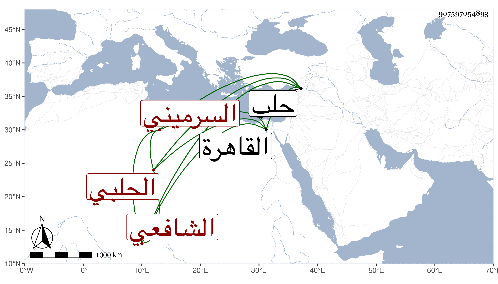

0902Sakhawi.DawLamic.ITO20230111-ara1.EIS1600.907597054893
Biography ID: 907597054893
إبراهيم بن حسين بن محمد بن حبيب البرهان بن البدر السرميني الأصل الحلبي المولد والدار الشافعي ويعرف كسلفه بابن الحلبي مولده في سابع عشري رمضان سنة اثنتين وسبعين وثمانمائة بحلب ونشأ بها فحفظ القرآن وجوده في بلده على محمد بن علي المعر مصيني نزيل حلب ويعرف بابن الدهن بل قرأ لعاصم وابن كثير على عمر الدركوشي الحلبي الضرير وبالقاهرة لأبي عمرو على عبد القادر المنهاجي الأزهري الشافعي وللسبع افرادا على الزين جعفر السنهوري وحفظ جل الشاطبية ومن المنهاج إلى الفرائض وأخذ الفقه هناك عن البدر حسن السيوفي وعبدالقادر بن الابار وغيرهما وعلى أولهما قرأ في العربية ثم قرأ فيها وفي الصرف على الشمس الدلجي الأزهري الشافعي وقرأ الورقات في أصول الفقه على الشهاب أحمد المسيري المحلي وحضر عند غيرهم قليلا وقدم القاهرة غير ما مرة مع أبيه ثم مستقلا في التجارة وسمع الحديث على جماعة بملاحظة فقيهه عمر التتائي بل قرأ على الديمي البخاري وعلى صحيح مسلم ولازمني في غير ذلك سنة خمس وتسعين وثمانمائة .
